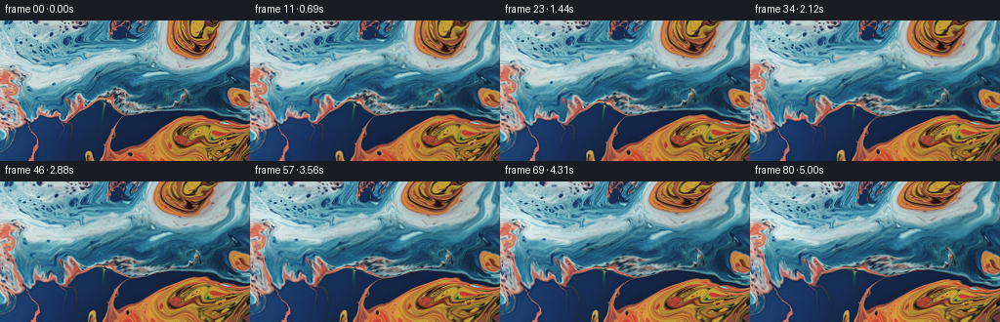
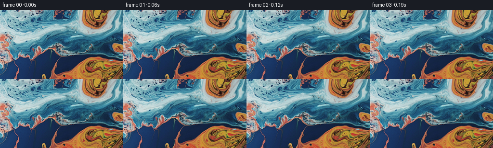

候选 01 · 2026-11-09T00:20:21.628528+00:00 · 点开播放与检查图
inspection.png

transition_check.png

代码变化
--- 上一保存版本
+++ 本次保存版本
@@ -0,0 +1,160 @@
+"""Animate the supplied liquid photograph with incompressible flow and ripples.
+
+All image content comes from first_frame.png. The coordinate field is advected
+rather than the RGB image, retaining the source's small reflected highlights.
+"""
+from pathlib import Path
+import json
+import numpy as np
+from PIL import Image
+import artifact_io
+
+ROOT = Path(__file__).resolve().parent
+
+
+def bilinear(a, x, y):
+ h, w = a.shape[:2]
+ x = np.clip(x, 0, w - 1)
+ y = np.clip(y, 0, h - 1)
+ ix = np.floor(x).astype(np.int32)
+ iy = np.floor(y).astype(np.int32)
+ jx = np.minimum(ix + 1, w - 1)
+ jy = np.minimum(iy + 1, h - 1)
+ fx, fy = x - ix, y - iy
+ if a.ndim == 3:
+ fx, fy = fx[..., None], fy[..., None]
+ return ((a[iy, ix] * (1-fx) + a[iy, jx] * fx) * (1-fy)
+ + (a[jy, ix] * (1-fx) + a[jy, jx] * fx) * fy)
+
+
+def cubic_weights(f):
+ return (-.5*f + f*f - .5*f*f*f,
+ 1 - 2.5*f*f + 1.5*f*f*f,
+ .5*f + 2*f*f - 1.5*f*f*f,
+ -.5*f*f + .5*f*f*f)
+
+
+def bicubic(a, x, y):
+ h, w = a.shape[:2]
+ x = np.clip(x, 0, w-1)
+ y = np.clip(y, 0, h-1)
+ ix, iy = np.floor(x).astype(np.int32), np.floor(y).astype(np.int32)
+ wx, wy = cubic_weights(x-ix), cubic_weights(y-iy)
+ out = np.zeros(x.shape + (3,), dtype=np.float64)
+ for j in range(4):
+ row = np.zeros_like(out)
+ for i in range(4):
+ row += a[np.clip(iy+j-1, 0, h-1), np.clip(ix+i-1, 0, w-1)] * wx[i][..., None]
+ out += row * wy[j][..., None]
+ return out
+
+
+def velocity(x, y, t, w, h):
+ """Curl of a smoothly evolving stream function: no compressing color blobs."""
+ psi = np.zeros_like(x)
+ px = np.zeros_like(x)
+ py = np.zeros_like(x)
+ # Broad, overlapping eddies turn the ribbons in different directions.
+ vortices = [
+ (48., 36., 66., 43., 174., .7),
+ (163., 45., 65., 46., -212., 2.4),
+ (192., 120., 69., 47., 222., 4.0),
+ (67., 119., 61., 41., -125., 5.1),
+ ]
+ for cx, cy, sx, sy, strength, phase in vortices:
+ cx += 5.5 * (np.sin(.25*t + phase) - np.sin(phase))
+ cy += 3.5 * (np.cos(.21*t + phase) - np.cos(phase))
+ strength *= 1 + .12*np.sin(.39*t + phase)
+ dx, dy = x-cx, y-cy
+ p = strength*np.exp(-.5*((dx/sx)**2+(dy/sy)**2))
+ psi += p
+ px -= p*dx/(sx*sx)
+ py -= p*dy/(sy*sy)
+ a = 2*np.pi*x/280 + .19*t + .3
+ b = 2*np.pi*y/195 - .23*t + .6
+ psi += 43*np.sin(a)*np.sin(b)
+ px += 43*(2*np.pi/280)*np.cos(a)*np.sin(b)
+ py += 43*(2*np.pi/195)*np.sin(a)*np.cos(b)
+ # Smooth no-through-image-edge conditions; reflections never duplicate.
+ ex, ey = np.sin(np.pi*x/(w-1)), np.sin(np.pi*y/(h-1))
+ dex = np.pi/(w-1)*np.cos(np.pi*x/(w-1))
+ dey = np.pi/(h-1)*np.cos(np.pi*y/(h-1))
+ vx = ex*(ey*py + dey*psi)
+ vy = -ey*(ex*px + dex*psi)
+ return vx, vy
+
+
+def surface(x, y, t, w, h):
+ dx, dy, light = np.zeros_like(x), np.zeros_like(x), np.zeros_like(x)
+ # Dispersive, oblique travelling surface waves, from broad swell to capillary ripples.
+ modes = [
+ (130., 2.30, 1.22, 12.0, .8),
+ (83., 1.35, 2.29, 9.1, 2.1),
+ (47., .60, .49, 7.0, 4.0),
+ (30., .18, 1.74, 5.6, 1.4),
+ (19., .07, 2.74, 4.7, 5.1),
+ ]
+ for k, (length, amplitude, angle, speed, phase) in enumerate(modes):
+ nx, ny = np.cos(angle), np.sin(angle)
+ p0 = 2*np.pi/length*(nx*x+ny*y)+phase
+ p = p0-2*np.pi*speed/length*t
+ wave = amplitude*(np.sin(p)-np.sin(p0))
+ dx += wave*nx
+ dy += wave*ny
+ if k < 3:
+ light += (.020/(1+.6*k))*(np.cos(p)-np.cos(p0))
+ dx *= (1-np.exp(-x/10))*(1-np.exp(-(w-1-x)/10))
+ dy *= (1-np.exp(-y/10))*(1-np.exp(-(h-1-y)/10))
+ return x+dx, y+dy, light
+
+
+def generate():
+ spec = json.loads((ROOT/'task_spec.json').read_text())
+ w, h, n, fps = spec['width'], spec['height'], spec['frames'], spec['fps']
+ original = np.asarray(Image.open(ROOT/'first_frame.png').convert('RGB'))
+ assert original.shape == (h,w,3)
+ source = original.astype(np.float64)
+ y, x = np.mgrid[:h,:w].astype(np.float64)
+ coordinates = np.stack((x,y), axis=-1)
+ frames = np.empty((n,h,w,3), dtype=np.uint8)
+ frames[0] = original
+ jacobians = []
+ dt = 1/(fps*3)
+ for f in range(1,n):
+ for sub in range(3):
+ end_t = (f-1)/fps + (sub+1)*dt
+ vx, vy = velocity(x,y,end_t,w,h)
+ mx, my = x-.5*dt*vx, y-.5*dt*vy
+ vmx, vmy = velocity(mx,my,end_t-.5*dt,w,h)
+ coordinates = bilinear(coordinates, x-dt*vmx, y-dt*vmy)
+ t = f/fps
+ rx, ry, illumination = surface(x,y,t,w,h)
+ warped = bilinear(coordinates,rx,ry)
+ u, v = warped[...,0], warped[...,1]
+ rgb = bicubic(source,u,v)
+ # Gentle illumination changes retain hue and the photographed sheen.
+ luminance = .2126*rgb[...,0]+.7152*rgb[...,1]+.0722*rgb[...,2]
+ sheen = .35+.65*np.clip(luminance/205,0,1)
+ rgb *= np.exp(illumination*sheen)[...,None]
+ frames[f] = np.clip(np.rint(rgb),0,255).astype(np.uint8)
+ if f in (1,20,40,60,80):
+ uy, ux = np.gradient(u)
+ vy, vx = np.gradient(v)
+ determinant = ux*vy-uy*vx
+ jacobians.append({'frame':f,'jacobian_min':float(determinant.min()),
+ 'jacobian_percentiles':np.percentile(determinant,[1,50,99]).tolist(),
+ 'rms_displacement':float(np.sqrt(np.mean((u-x)**2+(v-y)**2)))})
+ artifact_io.save(frames,ROOT)
+ differences = np.abs(np.diff(frames.astype(np.float32),axis=0))
+ report = {'shape':list(frames.shape), 'dtype':str(frames.dtype),
+ 'first_frame_exact':bool(np.array_equal(frames[0],original)),
+ 'mean_frame_delta':float(differences.mean()),
+ 'frame_delta_range':[float(differences.mean((1,2,3)).min()),float(differences.mean((1,2,3)).max())],
+ 'last_from_first_mae':float(np.abs(frames[-1].astype(float)-source).mean()),
+ 'coordinate_checks':jacobians}
+ (ROOT/'generation_checks.json').write_text(json.dumps(report,indent=2))
+ print(json.dumps(report,indent=2))
+
+
+if __name__ == '__main__':
+ generate()
命令 4 · 2026-11-09T00:20:18.416939+00:00/bin/bash -lc "cat > generate.py <<'PY'
\"\"\"Animate the supplied liquid photograph with incompressible flow and ripples.
All image content comes from first_frame.png. The coordinate field is advected
rather than the RGB image, retaining the source's small reflected highlights.
\"\"\"
from pathlib import Path
import json
import numpy as np
from PIL import Image
import artifact_io
ROOT = Path(__file__).resolve().parent
def bilinear(a, x, y):
h, w = a.shape[:2]
x = np.clip(x, 0, w - 1)
y = np.clip(y, 0, h - 1)
ix = np.floor(x).astype(np.int32)
iy = np.floor(y).astype(np.int32)
jx = np.minimum(ix + 1, w - 1)
jy = np.minimum(iy + 1, h - 1)
fx, fy = x - ix, y - iy
if a.ndim == 3:
fx, fy = fx[..., None], fy[..., None]
return ((a[iy, ix] * (1-fx) + a[iy, jx] * fx) * (1-fy)
+ (a[jy, ix] * (1-fx) + a[jy, jx] * fx) * fy)
def cubic_weights(f):
return (-.5*f + f*f - .5*f*f*f,
1 - 2.5*f*f + 1.5*f*f*f,
.5*f + 2*f*f - 1.5*f*f*f,
-.5*f*f + .5*f*f*f)
def bicubic(a, x, y):
h, w = a.shape[:2]
x = np.clip(x, 0, w-1)
y = np.clip(y, 0, h-1)
ix, iy = np.floor(x).astype(np.int32), np.floor(y).astype(np.int32)
wx, wy = cubic_weights(x-ix), cubic_weights(y-iy)
out = np.zeros(x.shape + (3,), dtype=np.float64)
for j in range(4):
row = np.zeros_like(out)
for i in range(4):
row += a[np.clip(iy+j-1, 0, h-1), np.clip(ix+i-1, 0, w-1)] * wx[i][..., None]
out += row * wy[j][..., None]
return out
def velocity(x, y, t, w, h):
\"\"\"Curl of a smoothly evolving stream function: no compressing color blobs.\"\"\"
psi = np.zeros_like(x)
px = np.zeros_like(x)
py = np.zeros_like(x)
# Broad, overlapping eddies turn the ribbons in different directions.
vortices = [
(48., 36., 66., 43., 174., .7),
(163., 45., 65., 46., -212., 2.4),
(192., 120., 69., 47., 222., 4.0),
(67., 119., 61., 41., -125., 5.1),
]
for cx, cy, sx, sy, strength, phase in vortices:
cx += 5.5 * (np.sin(.25*t + phase) - np.sin(phase))
cy += 3.5 * (np.cos(.21*t + phase) - np.cos(phase))
strength *= 1 + .12*np.sin(.39*t + phase)
dx, dy = x-cx, y-cy
p = strength*np.exp(-.5*((dx/sx)**2+(dy/sy)**2))
psi += p
px -= p*dx/(sx*sx)
py -= p*dy/(sy*sy)
a = 2*np.pi*x/280 + .19*t + .3
b = 2*np.pi*y/195 - .23*t + .6
psi += 43*np.sin(a)*np.sin(b)
px += 43*(2*np.pi/280)*np.cos(a)*np.sin(b)
py += 43*(2*np.pi/195)*np.sin(a)*np.cos(b)
# Smooth no-through-image-edge conditions; reflections never duplicate.
ex, ey = np.sin(np.pi*x/(w-1)), np.sin(np.pi*y/(h-1))
dex = np.pi/(w-1)*np.cos(np.pi*x/(w-1))
dey = np.pi/(h-1)*np.cos(np.pi*y/(h-1))
vx = ex*(ey*py + dey*psi)
vy = -ey*(ex*px + dex*psi)
return vx, vy
def surface(x, y, t, w, h):
dx, dy, light = np.zeros_like(x), np.zeros_like(x), np.zeros_like(x)
# Dispersive, oblique travelling surface waves, from broad swell to capillary ripples.
modes = [
(130., 2.30, 1.22, 12.0, .8),
(83., 1.35, 2.29, 9.1, 2.1),
(47., .60, .49, 7.0, 4.0),
(30., .18, 1.74, 5.6, 1.4),
(19., .07, 2.74, 4.7, 5.1),
]
for k, (length, amplitude, angle, speed, phase) in enumerate(modes):
nx, ny = np.cos(angle), np.sin(angle)
p0 = 2*np.pi/length*(nx*x+ny*y)+phase
p = p0-2*np.pi*speed/length*t
wave = amplitude*(np.sin(p)-np.sin(p0))
dx += wave*nx
dy += wave*ny
if k < 3:
light += (.020/(1+.6*k))*(np.cos(p)-np.cos(p0))
dx *= (1-np.exp(-x/10))*(1-np.exp(-(w-1-x)/10))
dy *= (1-np.exp(-y/10))*(1-np.exp(-(h-1-y)/10))
return x+dx, y+dy, light
def generate():
spec = json.loads((ROOT/'task_spec.json').read_text())
w, h, n, fps = spec['width'], spec['height'], spec['frames'], spec['fps']
original = np.asarray(Image.open(ROOT/'first_frame.png').convert('RGB'))
assert original.shape == (h,w,3)
source = original.astype(np.float64)
y, x = np.mgrid[:h,:w].astype(np.float64)
coordinates = np.stack((x,y), axis=-1)
frames = np.empty((n,h,w,3), dtype=np.uint8)
frames[0] = original
jacobians = []
dt = 1/(fps*3)
for f in range(1,n):
for sub in range(3):
end_t = (f-1)/fps + (sub+1)*dt
vx, vy = velocity(x,y,end_t,w,h)
mx, my = x-.5*dt*vx, y-.5*dt*vy
vmx, vmy = velocity(mx,my,end_t-.5*dt,w,h)
coordinates = bilinear(coordinates, x-dt*vmx, y-dt*vmy)
t = f/fps
rx, ry, illumination = surface(x,y,t,w,h)
warped = bilinear(coordinates,rx,ry)
u, v = warped[...,0], warped[...,1]
rgb = bicubic(source,u,v)
# Gentle illumination changes retain hue and the photographed sheen.
luminance = .2126*rgb[...,0]+.7152*rgb[...,1]+.0722*rgb[...,2]
sheen = .35+.65*np.clip(luminance/205,0,1)
rgb *= np.exp(illumination*sheen)[...,None]
frames[f] = np.clip(np.rint(rgb),0,255).astype(np.uint8)
if f in (1,20,40,60,80):
uy, ux = np.gradient(u)
vy, vx = np.gradient(v)
determinant = ux*vy-uy*vx
jacobians.append({'frame':f,'jacobian_min':float(determinant.min()),
'jacobian_percentiles':np.percentile(determinant,[1,50,99]).tolist(),
'rms_displacement':float(np.sqrt(np.mean((u-x)**2+(v-y)**2)))})
artifact_io.save(frames,ROOT)
differences = np.abs(np.diff(frames.astype(np.float32),axis=0))
report = {'shape':list(frames.shape), 'dtype':str(frames.dtype),
'first_frame_exact':bool(np.array_equal(frames[0],original)),
'mean_frame_delta':float(differences.mean()),
'frame_delta_range':[float(differences.mean((1,2,3)).min()),float(differences.mean((1,2,3)).max())],
'last_from_first_mae':float(np.abs(frames[-1].astype(float)-source).mean()),
'coordinate_checks':jacobians}
(ROOT/'generation_checks.json').write_text(json.dumps(report,indent=2))
print(json.dumps(report,indent=2))
if __name__ == '__main__':
generate()
PY
python generate.py"exit 0